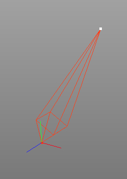

Split Joint Tool
The split joint tool helps you to split a joint. This is
especially helpfull if you want to create a long hirarchy of
equally spaced joints. For example if you want to animate the tail
of an animal with spline
IK.

On the left image you can see a single bone created of two
joints. The second image show
the bone after the root joint was splitted 5 times.
Modes
This tool works in all modes equally.


To use the split joint tool first select the root joint of the bone you want to split and then select "Tools CharacterSplit
Joint" from the menu. The split joint tool will now show up in
the tool properties and you can set the desired properties. Once
finished click on the OK button and the tool is applied to the
currently selected joint.
CharacterSplit
Joint" from the menu. The split joint tool will now show up in
the tool properties and you can set the desired properties. Once
finished click on the OK button and the tool is applied to the
currently selected joint.
Keys
- none
Properties
- Number: Determines into how many joints the selected joint will be split.
- Apply: Clicking onto the OK button apply to perform the joint split.